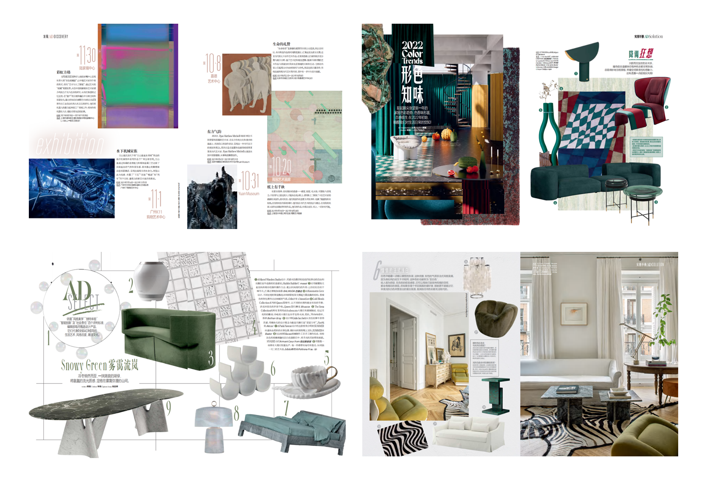
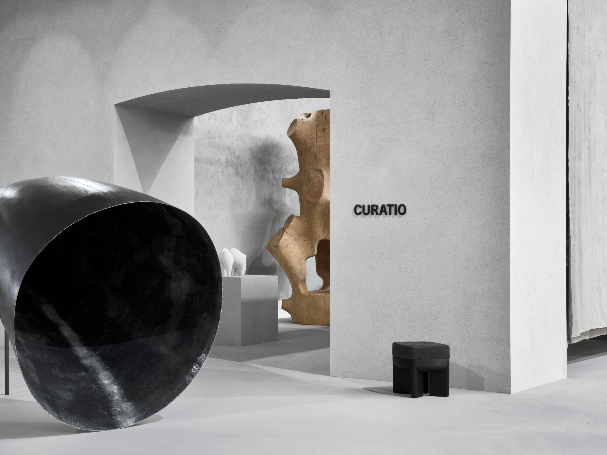
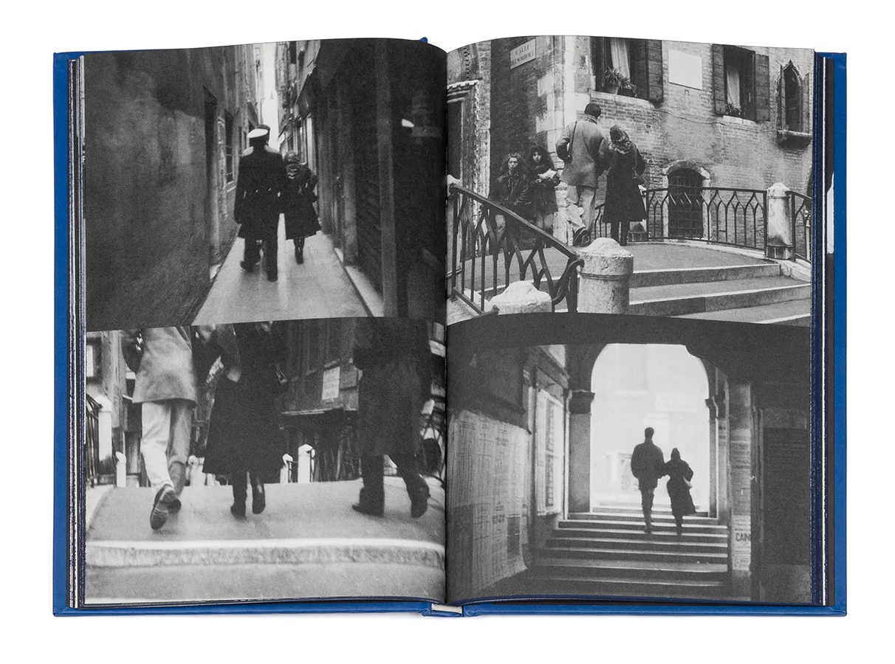
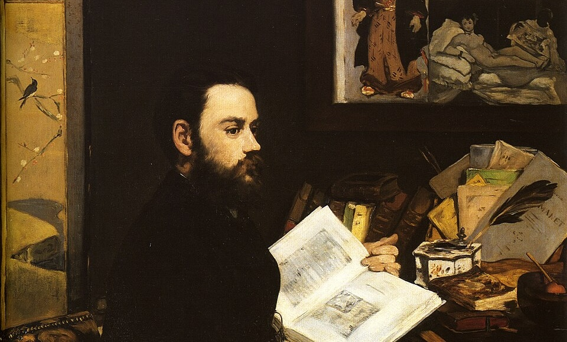

Sun Boya
Boya believes: where there is a will, there is a way.
Elle était étudiante en droit, aujourd’hui, elle travaille dans le domaine culturel depuis cinq ans.
Après avoir décidé de s’installer en France, elle a appris le français seule, partant de zéro jusqu’au niveau C1 en deux ans.
Boya souhaite vivre le plus possible.
En lisant un texte, Boya perçoit l’unicité d’une voix.
En regardant un visuel, elle saisit un style, ainsi que l’émotion qu’il peut faire émerger.
Le rêve ultime de Boya est de devenir artiste.
Pour l’instant, elle souhaite créer des œuvres de design，d'articles qui touchent au cœur humain.
Boya est prête.
Projects

Mon travail sur la rubrique AD Select chez Architectural Digest China m’a permis
de développer une sensibilité particulière à la manière dont la couleur,
les matériaux, les formes et les proportions contribuent à la construction d’un style.
La rubrique AD Solutions a renforcé ma capacité à différencier et à mettre en
valeur différentes approches du design d’intérieur autour d’un même thème.
Enfin, la préparation des annonces d’expositions a développé mes compétences
en recherche d’information, synthèse rédactionnelle et sélection d’images.

Dotée d’un regard particulièrement aiguisé pour les détails qui font toute la différence, Leriche est, pour de nombreux designers et marques, celle dont le choix signifie être véritablement « vu ».

"My creative process doesn’t begin with a blank page - it begins with the world as it already is. I enter a space, a context, a reality. And I choose. I listen to what speaks to me, what moves me, what already holds meaning. I don’t erase its past; I amplify its essence."

“Je ne cherche pas l’accord parfait entre toutes les pièces.Ce qui m’intéresse, ce sont ces moments légèrement inattendus, mais qui conservent malgré tout une forme de cohérence : cette tension m’est essentielle.”

Elle s’épanouit sa vie, en effaçant sa vie.
“L’ailleurs” n’est pas ailleurs, il est ICI.
« L’algèbre, c’est comme une partition... Pouvez-vous entendre la musique Robert ? »
- Oppenheimer
Après avoir analysé et comparé les deux traductions du passage classique de La pierre qui pousse de
Camus à travers la perspective théorique de Giovanni Pascoli sur la distinction entre un traducteur
et un interprète, je me suis rappelé cette citation d’Oppenheimer.

Partant des articles critiques de Zola consacrés à Manet, ce mini-mémoire tente de mettre en
lumière un point de bascule méthodologique dans l’histoire de l’art moderne. En exaltant la
primauté de la forme dans la peinture de Manet, Zola ne se contente pas d’appuyer une révolution
esthétique : il formule une esthétique moderne centrée sur la perception. Ce geste critique irrigue
également sa propre pratique naturaliste.
À nos yeux contemporains, cette orientation ne relève pas
seulement d’un tournant dans l’histoire de l’art : elle trouve aujourd’hui un écho inattendu dans
certains fondements de la neuro-esthétique.
Réflexions
Boya tient à rencontrer l'artiste comme on rencontre un ami.
À travers ses recherches et ses textes, elle souhaite que le lecteur se sente plus proche de l’artiste
et de son œuvre, comme s’ils venaient de passer tout un après-midi à se promener ensemble dans une forêt.
每一个采访问题都是记者在努力理解被采访人时所建造的桥，只是，桥送过去之后，一个真诚的被采访人可能会带你去到一个完全想不到的地方，这是被采访人的桥，这个桥，记者必须以最开放的心智和最温柔的同情接过来，才有跨越几乎不可能跨越的主观性偏见，让采访真正发挥它的意义：建造令人类走出个体的孤独，走向他人的巴别塔。
Chaque question d’entretien est un pont que le journaliste construit pour tenter de comprendre la personne interrogée. Mais une fois ce pont envoyé,un interlocuteur sincère peut vous conduire vers un endroit totalement inattendu.
C’est alors le pont construit par l’interviewé. Et ce pont, le journaliste doit l’accueillir avec l’esprit le plus ouvert et la sympathie la plus délicate, afin de franchir le fossé presque infranchissable des biais subjectifs.
Alors seulement l’entretien peut accomplir son véritable sens : construire une Babel où l’être humain sort de sa solitude individuelle pour aller vers l’autre.
采访不是试卷上的一问一答，在采访中，追问总是要随答案转换，对方的答案是记者深入了解他的台阶，引导记者问出并没有事先准备的问题。在这样的循环中，两个人的相识，也才能从浮于表象的已知，走向共同探索的未知。
Un entretien n’est pas un simple jeu de questions et réponses comme sur une feuille d’examen. Dans un entretien, les relances se transforment toujours au fil des réponses.
Les réponses de l’interlocuteur deviennent des marches qui permettent au journaliste d’approfondir sa compréhension, et l’amènent à poser des questions qui n’étaient pas préparées à l’avance.
Dans ce mouvement circulaire, la rencontre entre deux personnes peut alors passer d’un savoir superficiellement connu à une exploration commune de l’inconnu.